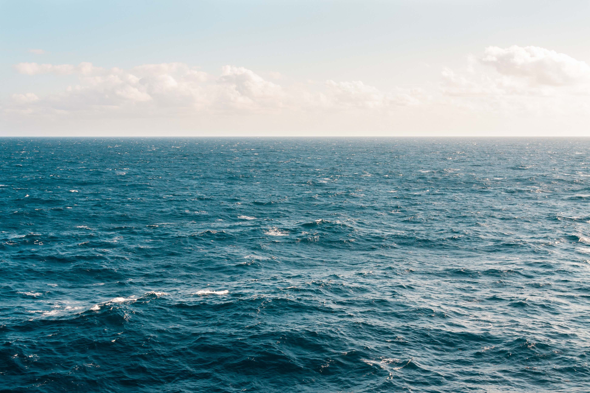

The Deep Blue
The ocean is a continuous body of salt water that covers more than 70 percent of the Earth's surface. Ocean currents govern the world's weather and churn a kaleidoscope of life. Humans depend on these teeming waters for comfort and survival, but global warming and overfishing threaten Earth's largest habitat. Geographers divide the ocean into five major basins: the Pacific, Atlantic, Indian, Arctic, and Southern. Smaller ocean regions such as the Mediterranean Sea, Gulf of Mexico, and the Bay of Bengal are called seas, gulfs, and bays. Inland bodies of saltwater such as the Caspian Sea and the Great Salt Lake are distinct from the world's oceans. The oceans hold about 321 million cubic miles (1.34 billion cubic kilometers) of water, which is roughly 97 percent of Earth's water supply. Seawater's weight is about 3.5 percent dissolved salt; oceans are also rich in chlorine, magnesium, and calcium. The oceans absorb the sun's heat, transferring it to the atmosphere and distributing it around the world. This conveyor belt of heat drives global weather patterns and helps regulate temperatures on land, acting as a heater in the winter and an air conditioner in the summer.
Atlantic Ocean
North Sea

Baltic Sea
Mediterranean
Black Sea
Red Sea
Tasman Sea
Solomon Sea